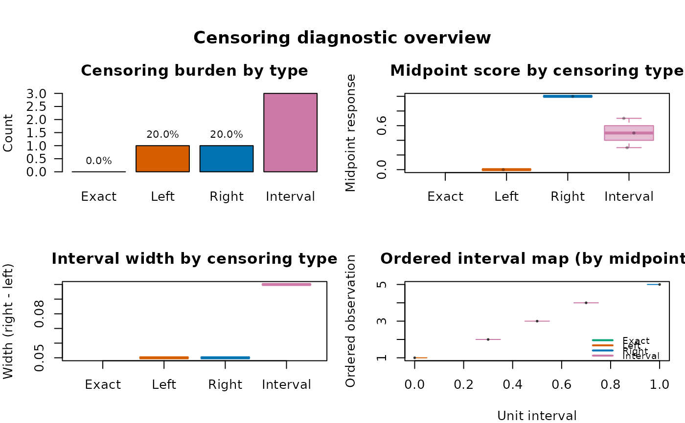

Produces a visual summary of the censoring structure in a fitted
"brs" model or a response matrix produced by
brs_check. The summary includes:
Bar chart of censoring type counts
Histogram of midpoint responses colored by censoring type
Interval plot showing \([l_i, u_i]\) segments
Proportion table of censoring types
Usage
brs_cens(
object,
n_sample = 100L,
which = 1:4,
caption = NULL,
gg = FALSE,
title = "Censoring diagnostic overview",
sub.caption = NULL,
theme = NULL,
palette = NULL,
inform = FALSE,
...
)Arguments
- object
A fitted
"brs"object, a matrix returned bybrs_check, or a data frame returned bybrs_prep(must contain columnsleft,right,yt, anddelta).- n_sample
Integer: maximum number of observations to show in the interval plot (default 100). If the data has more observations, a random sample is drawn.
- which
Integer vector selecting which panels to draw (default
1:4).- caption
Optional panel captions. Accepts a character vector (or list coercible to character) with up to 4 labels, in the order: burden, midpoint-by-type, width-by-type, ordered interval map.
- gg
Logical: use ggplot2? (default
FALSE).- title
Optional global title for the plotting page.
- sub.caption
Optional subtitle/caption for the plotting page.
- theme
Optional ggplot2 theme object (e.g.,
ggplot2::theme_bw()). IfNULL, a minimal theme is used whengg = TRUE.- palette
Optional named character vector with colors for censoring types
Exact,Left,Right, andInterval.- inform
Logical; if
TRUE, prints brief interpretation messages about boundary and interval censoring intensity.- ...
Further arguments (currently ignored).
Value
Invisibly returns a data frame with censoring counts and proportions, percentages, and interpretation flags.
References
Lopes, J. E. (2023). Modelos de regressao beta para dados de escala. Master's dissertation, Universidade Federal do Parana, Curitiba. URI: https://hdl.handle.net/1884/86624.
Hawker, G. A., Mian, S., Kendzerska, T., and French, M. (2011). Measures of adult pain: Visual Analog Scale for Pain (VAS Pain), Numeric Rating Scale for Pain (NRS Pain), McGill Pain Questionnaire (MPQ), Short-Form McGill Pain Questionnaire (SF-MPQ), Chronic Pain Grade Scale (CPGS), Short Form-36 Bodily Pain Scale (SF-36 BPS), and Measure of Intermittent and Constant Osteoarthritis Pain (ICOAP). Arthritis Care and Research, 63(S11), S240-S252. doi:10.1002/acr.20543
Hjermstad, M. J., Fayers, P. M., Haugen, D. F., et al. (2011). Studies comparing Numerical Rating Scales, Verbal Rating Scales, and Visual Analogue Scales for assessment of pain intensity in adults: a systematic literature review. Journal of Pain and Symptom Management, 41(6), 1073-1093. doi:10.1016/j.jpainsymman.2010.08.016
Examples
y <- c(0, 3, 5, 7, 10)
Y <- brs_check(y, ncuts = 10)
brs_cens(Y)

prep <- brs_prep(data.frame(y = y), ncuts = 10)
#> brs_prep: n = 5 | exact = 0, left = 1, right = 1, interval = 3
brs_cens(prep)